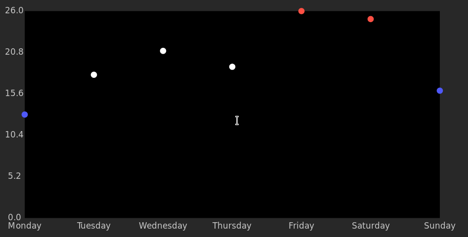

In this lab, we are going to build basic charts with D3. We will start with a scatter plot and then create a bar chart. Weather data is a suitable dataset for this exercise. Fetch some weather forecast for this week and get started.
D3 needs data in the form of an array of objects, such as [{'x': 1, 'y': 2}, {'x': 2, 'y': 5}.
We provide the example data in the variables TEST_TEMPERATURES and DAYS. Please convert this data into an array where each element is {'y': temperature, 'x': number_of_day, 'name': day_name}.
To use D3 funcitons, first, you need to add the latest version of D3 library to your project. It is included in the exercise files, so one way to do this is to add it as a script to your HTML file.
<script src="lib/d3.min.js"></script>Alternatively you can use the CDN: <script src="https://d3js.org/d3.v5.min.js"></script>
First task is to create a simple full-screen scatter plot. Before you get started, we strongly encourage you to read this blog post by Mike Bostock, creator of D3. It explains a very basic, yet very important, concept of the library. You will be using it in all D3 projects. Also, it will tell you exactly how to build your first scatter plot.
Please use the tutorial to add the circles for the data you have converted.
If you used the x and y of the datapoints directly as SVG coordinates, you may notice that the points don’t cover the whole plot. We should rescale them.
The SVG diagram has an internal coordinate space - it is in this space that we place our elements by specifying their x and y. The origin and size of that space is determined by the viewBox property. For convenience, we used viewBox="-10 -10 220 120" which means that the internal coordinate space of the SVG starts at [-10, -10] and its size is [220, 120].
Therefore the space is from [-10, -10] to [210, 110]. We will use the space from [0, 0] to [200, 100] for our plot, while the remaining space are the margins. In the bottom and left margins (x=-10 to 0, y=100 to 110) we will also place the labels.
Please use D3 scales to map between the range of our values to the space of the plot. The functions d3.min and d3.max can be helpful as well.
Please remember that the SVG Y is 0 at top of the diagram, but scatter plots usually have 0 at the bottom.
Like in the previous exercise, please change the color of the points according to the temperature (17 and below is blue, 23 and above is red, default is white).
You have learned how to place elements with D3. If you feel confident, try creating text labels for the plot, as seen in the reference solution:

Now, create a bar chart. The scatter plot that we have just created only takes a part of the screen. When you resize the browser window, the bar chart should adjust accordingly. Adjust the coordinates with scales to fill the viewport. Once you have done this, feel free to experiment with scales in console.